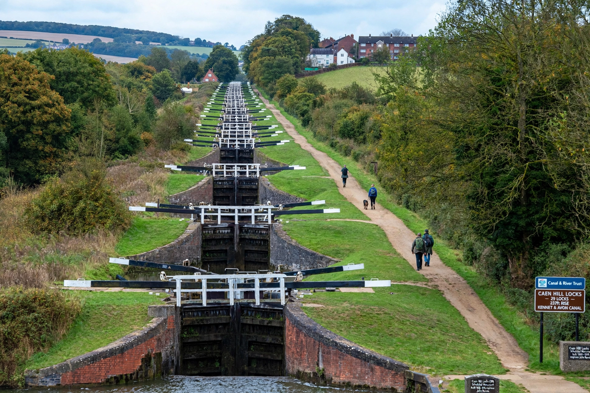

Caen Hill Locks
From Wikipedia, the free encyclopedia

The Caen Hill Locks are a flight of 29 canal locks on the Kennet and Avon Canal at Devizes, Wiltshire, England — one of the most impressive sights of Britain's canal age. The central staircase of 16 locks, climbing in a straight line up the hill, lifts boats 72 metres over 3.2 km; the flight takes narrowboats five to six hours to traverse and is worked by hand, gate by gate, as it was when opened in 1810.
Engineering
Designed by John Rennie and built 1796–1810, the flight uses side pounds to conserve water between the closely packed chambers; it was the last section of the Kennet and Avon completed, the rest of the canal having opened earlier. Commercial traffic died with the railways; the flight fell derelict and was restored under the Kennet and Avon Canal Trust, reopened by Queen Elizabeth II in 1990.
Today
Maintained by the Canal & River Trust, Caen Hill is a scheduled ancient monument and a working spectacle of heritage engineering, drawing boaters and towpath spectators through the summer season.